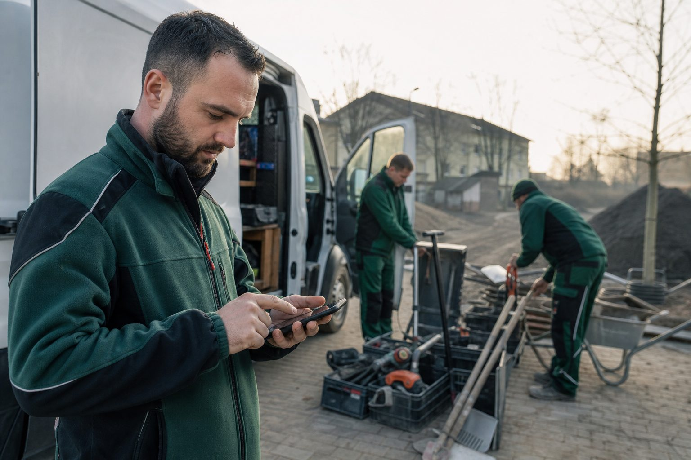

123erfasst: Zeiterfassung, die nebenbei das Bautagebuch schreibt
Stunden, Standorte, Fotos, Material und Wetter kommen vom Handy der Kolonne direkt ins Büro – und die App macht daraus automatisch das Bautagebuch. Eine der verbreitetsten Baustellen-Apps im Steckbrief.
3 Min. Lesezeit